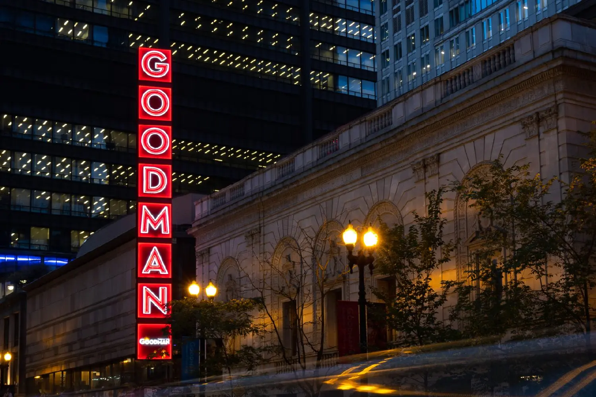
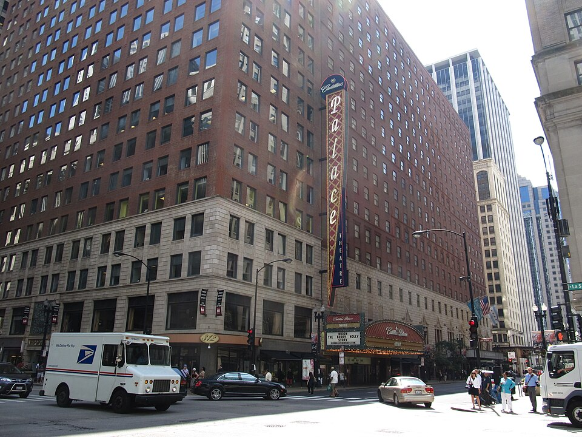
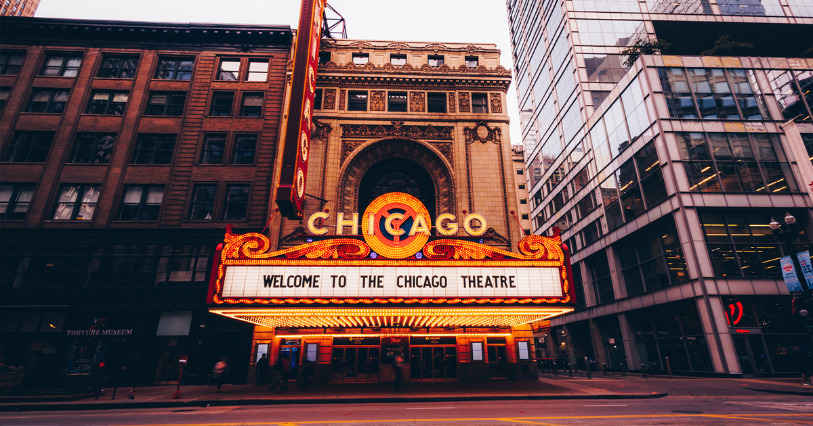
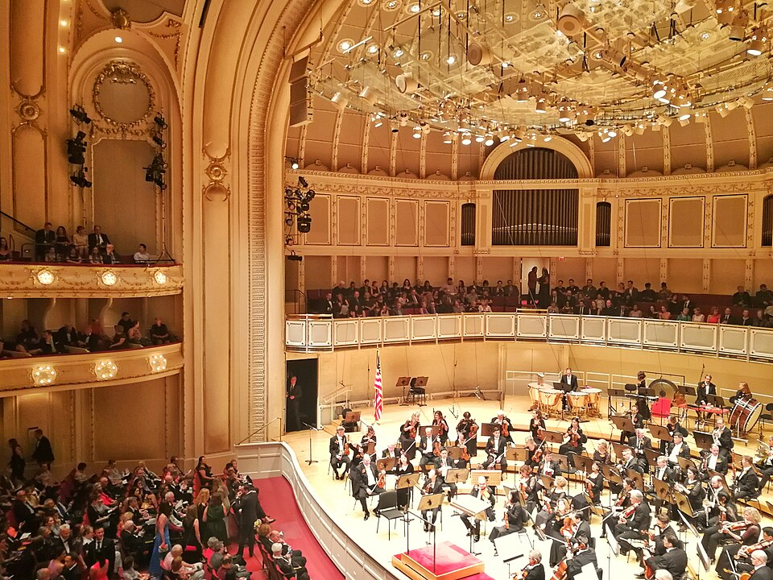

Upcoming Shows
Concerts and comedy just announced at ward-area stages. Hunt for discounted tickets on Bucketlisters (pick Chicago).
Chicago Street Festivals
The season's festivals across the city, with the ones in and around the West Loop highlighted. Dates from the city's festival guide; each drops off once it passes.
In & around the West Loop
No festivals coming up right now.
Museums & Galleries
National Hellenic Museum
Greektown's home for Greek history, art, and the immigrant story, at 333 S. Halsted. This summer: free admission on the first Sunday of each month (10am–4pm, June–August 2026) and free children's programming all season.
Current exhibits & events →

Jane Addams Hull-House Museum
The preserved home of Nobel laureate Jane Addams' settlement house at 800 S. Halsted, on the UIC campus - the birthplace of American social work. Admission is free.
Hours & visiting info →
National Public Housing Museum
Housed in the last remaining building of the Jane Addams Homes at 919 S. Ada St., the country's first museum dedicated to the story of public housing and the families who lived it.
Plan a visit →

Design Museum of Chicago
A free museum celebrating design in all its forms, at 72 E. Randolph in the Loop's Expo 72 space - rotating exhibitions on graphic design, architecture, and Chicago visual culture.
Current exhibitions →
Epiphany Center for the Arts
A restored 1885 church campus at 201 S. Ashland with six galleries and three music venues. This July: free Blues Friday with Ms. Sassy and gallery closing receptions (Jul 3), Dan Merlo Quartet (Jul 9), Anne & Mark Burnell (Jul 16), Keyon Harrold (Jul 25).
Full calendar & tickets →
Theaters & Stages

Lyric Opera of Chicago
One of the world's great opera companies, in the landmark 1929 Civic Opera House at 20 N. Wacker. The season runs fall through spring, with concerts and special events year-round.
Season & tickets →

Goodman Theatre
Chicago's oldest and largest nonprofit theater, at 170 N. Dearborn - two stages, a Tony Award for Outstanding Regional Theatre, and the city's beloved annual 'A Christmas Carol.'
Now playing →

Broadway in Chicago - Loop Theaters
The Loop's historic touring houses: the Cadillac Palace (151 W. Randolph), the James M. Nederlander (24 W. Randolph), and the CIBC Theatre (18 W. Monroe) host Broadway tours and pre-Broadway premieres all year.
Current shows & schedules →

City Winery Chicago
A working winery, restaurant, and intimate 300-seat concert hall at 1200 W. Randolph - national touring artists most nights of the week, plus a seasonal Riverwalk outpost.
Concert calendar →

The Chicago Theatre
The 1921 movie palace at 175 N. State whose marquee is the city's unofficial logo - comedy, concerts, and special events under the six-story CHICAGO sign, steps from the ward's eastern edge.
Upcoming events →

Chicago Symphony Orchestra
Just east of the ward at 220 S. Michigan, one of the world's most honored orchestras performs September through June at Orchestra Hall, with summer residencies at Ravinia.
Concerts & tickets →
Schedules and showtimes change frequently - each link above goes directly to the venue's own live calendar, so
what you see is always current. Venue-verified highlights (like the National Hellenic Museum's free summer Sundays and
Epiphany's July lineup) are refreshed through the site's daily update cycle and removed when they pass.
Photos: Cadillac Palace by Ken Lund (CC BY-SA 2.0) and Orchestra Hall by Kroum (CC BY-SA 4.0), via Wikimedia Commons.